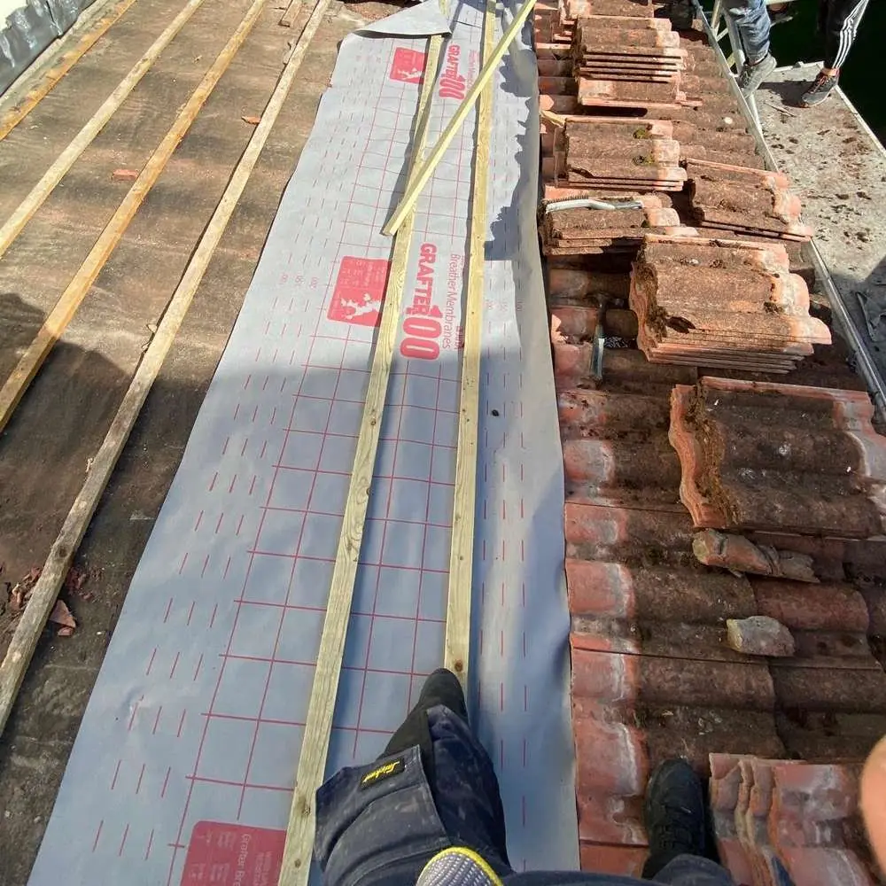

Roof Repairs
Dublin weather is hard on roofs. We repair everything from minor leaks to extensive damage, on all common roof types and materials.
We find the underlying cause rather than patching over what is visible, use weather-resistant materials, and give you a clear, no-obligation quote first.
- Storm damage
- Leak repair and prevention
- Tile and slate repairs
- Leadwork repairs
- Valley and gully repairs
- Emergency repairs